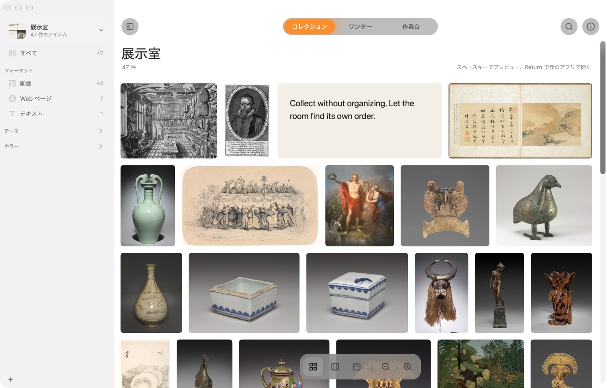
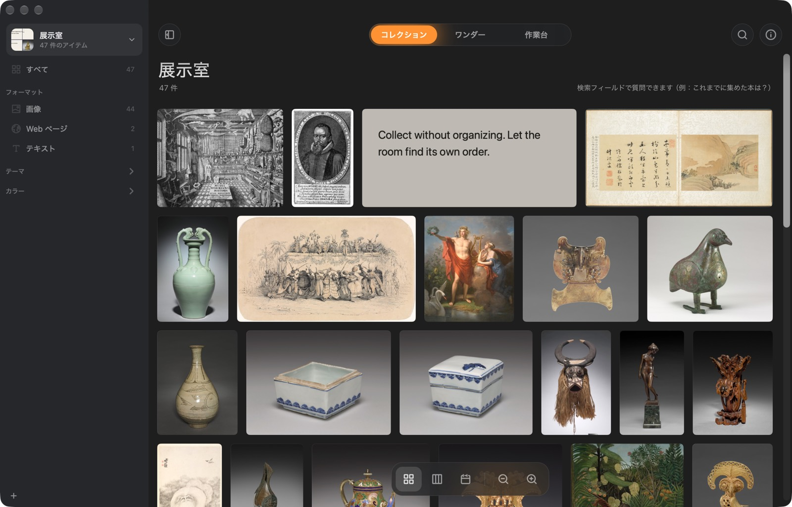

すべてをひと目で。
グリッド、メイソンリー、タイムラインで眺められます。サイドバーには形式、種類、テーマ、色が自動で並びます。


Mac のための驚異の部屋。なんでも集めて、整理はしない。
Mac 版をダウンロード無料 · 4 MB · macOS 14 以降 · 初めて開くときは？


1Wunder とは
画像、リンク、引用、スクリーンショット、ファイル。⌘⇧C を押せば入ります。フォルダを選ぶことも、名前を付けることもありません。
Wunder は集めたものを見ています。画像の中の文字、写っているもの、色。だから整理したことがなくても、あとで見つけられます。
2何が違うのか
フォルダは、なぜ取っておいたのか分かる前に、置き場所を決めさせます。だからものは、どこにもないか、あちこちにあることになります。
Wunder は形式、種類、テーマ、色で自分で整理します。昔のものも連れ戻してくれるので、集めたものがしまい込まれたままになりません。
3使い方
4できること
グリッド、メイソンリー、タイムラインで眺められます。サイドバーには形式、種類、テーマ、色が自動で並びます。
ひとりでに漂う壁。「今日のおすすめ」は忘れかけていたものを毎日 12 点選び、その理由も添えます。


形式、種類、テーマ、色で積み分け、動かして、線でつなぐ。戻ってこられる並べ方を 3 つ保存できます。


心ひかれたものを、取っておこう。
| Wunder | Atlas | Eagle | |
|---|---|---|---|
| 価格 | 無料 | US$39 | US$29.95 |
| フォルダやタグを作らなくても自動で整理 | ✓ | – | ルールが必要 |
| 言葉で説明して画像を探す | ✓ | – | ✓ |
| 毎日、昔のものを連れ戻す | ✓ | – | – |
| 自由に並べられるキャンバス | ✓ | ✓ | – |
| すべて Mac の中に保存 | ✓ | ✓ | ✓ |
| Windows 版もある | – | – | ✓ |
各アプリの公式サイトの記載をもとに作成（2026 年 10 月）。
なくしたくないけれど、整理もしたくないものを置いておく Mac の上の場所です。画像、Web ページ、テキスト、ファイルを受け取り、中身を理解して、また見つけられるようにします。
Wunder はまだ Apple の公証を受けていないため、初回は macOS に止められます。「システム設定 → プライバシーとセキュリティ」を開き、下までスクロールして「このまま開く」をクリックしてください。一度だけで済みます。
またはターミナルで：xattr -dr com.apple.quarantine /Applications/Wunder.app
いいえ。画像内の文字の読み取り、写っているものの認識、色、似た画像、質問への回答は、すべて Apple のフレームワークで Mac の上で行われます。Wunder がネットにつながるのは、集めたページの読み込み、説明検索用モデル（約 106 MB、1 回だけ、任意）のダウンロード、新しいバージョンの確認のときだけです。
いいえ。ファイルの場所を覚えていて、移動しても追いかけます。コピーを残したい場合は、展示室ごとに専用フォルダへ保存することもできます。
展示室の同期をオンにすると iCloud Drive に移り、同じ Apple アカウントの Mac ならどれでも開けます。2 台で同時に変更しても、両方の変更が残ります。
macOS 14 Sonoma 以降の Mac。コレクションへの質問には Apple Intelligence（macOS 26）が必要です。
はい。ソースは GitHub にあります。
Mac 版は無料。アカウントも設定もいりません。
Mac 版をダウンロード